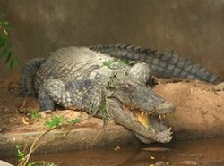

Categorie(s):
Fleuve,
Lac
jardin zoologique de garoua
Situé en plein coeur de la ville de Garoua, dans l’arrondissement de Garoua 2ème, le jardin zoologique de Garoua est une opportunité touristique si vous avez un peu de temps libre. Avec sa superficie d’environ 6,8 hectares, le zoo de Garoua présente un couvert végétal à prédominance d’espèces exotiques et quelques pieds d’espèces dites indigènes. Son sous-bois est très riche en graminées.
Crée en 1966 comme petite ménagerie à parc d’animaux sauvages en transit, le zoo de Garoua a connu plusieurs mutations pour se retrouver depuis 1992 sous la tutelle du Ministère des forêts et de la faune. En 1974, le jardin zoologique comptait des espèces très variées. On y retrouvait ainsi des éléphants, des antilopes, des dromadaires, des gros reptiles, des lions, des buffles et des hyènes. Beaucoup ont été transférées, il n’y a pas très longtemps au jardin zoologique de Mvog-betsi à Yaoundé. Actuellement, le zoo est principalement peuplé de crocodiles de Nil dont la population est supérieure à 70 individus. La raison en est simple puisque le zoo de Garoua est l’un des seuls ayant réussi la reproduction en captivité de cette espèce. Mais on trouve également un aigle pécheur, un marabout, un céphalophe, une gazelle de Thomson, trois dromadaires, une tortue, un vervet et plusieurs drills, babouins, chimpanzés et patas. Si vous vous promenez dans les sous bois du parc, vous rencontrerez également des roussettes et croiserez les dromadaires ou quelques babouins en liberté.
Après plusieurs années de quasi abandon, des travaux ont été engagés pour réhabiliter ce zoo. De nouveaux enclos sont en cours de construction afin de pouvoir accueillir dans un avenir proche des lions et des antilopes.
Le tarif de visite est de 1.000 FCFA par adulte, 500 FCFA par enfant et 1.000 FCF pour prendre des photos.
Pour y accéder : Le zoo est situé en face de l’hôtellerie Saint Hubert et juste à côté de l’Alliance Franco Camerounaise de Garoua